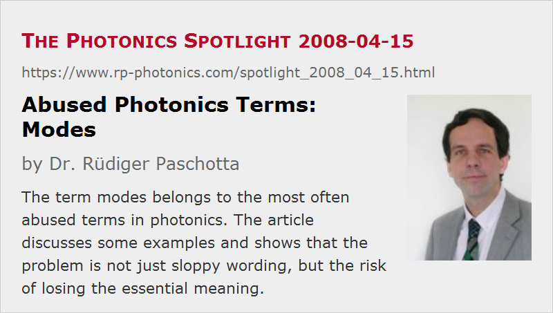

Abused Photonics Terms: Modes
Posted on 2008-04-15 as a part of the Photonics Spotlight (available as e-mail newsletter!)
Permanent link: https://www.rp-photonics.com/spotlight_2008_04_15.html
Author: Dr. Rüdiger Paschotta, RP Photonics Consulting GmbH
Abstract: The term modes belongs to the most often abused terms in photonics. The article discusses some examples and shows that the problem is not just sloppy wording, but the risk of losing the essential meaning.

Ref.: encyclopedia articles on modes, mode cleaners, frequency combs
One of the most often abused terms in photonics is that of modes. Sentences like the two following ones are sometimes heard:
- “The mode coming out of this laser looks somewhat distorted, doesn't it?”
- “Let's try to fix this with a mode cleaner.”
Precisely speaking, however, a mode will never come out of a laser, and it can also not be cleaned. After all, a mode is a concept of thinking, not a physical entity. What is meant in the above sentences is actually a laser beam, the intensity and/or phase profile of which has been distorted, and may be “cleaned up”.
Perhaps more importantly, we can clean up our use of language. Some people find this pedantic, but who would seriously claim that the meaning of words is not important in science?
In fact, the trouble with such abuse of scientific terms is often that the actual meaning gets lost – in our concrete case, the concept of modes. Essentially, modes are self-consistent field configurations. In the case of resonator modes, these are self-consistent in the sense that they reproduce themselves after a full resonator round trip, disregarding some possible change of total optical power. In the case of free space (or some other optically homogeneous medium), modes preserve their change during propagation; in that case, some widening or contraction of the intensity distribution is allowed, if it is only a rescaling.
Another popular way to abuse the term:
- “The output of a mode-locked laser consists of exactly equidistant modes.”
Again, the output is a beam, not one or several modes. A partly improved version would be:
- “The optical spectrum of the output of a mode-locked laser consists of exactly equidistant modes.”
This is better, but still incorrect and misleading. The spectral properties of the laser output are strongly influenced, but not fully determined by the properties of the modes of the laser resonator. The optical spectrum of the laser output does contain exactly equidistant lines, while the optical frequencies of the resonator modes are not exactly equidistant due to chromatic dispersion. This shows very clearly that confusing the lines in the spectrum with the modes is not just sloppy language, but rather misrepresents what is physically happening: There is some kind of mode locker (→ mode locking) which forces the laser to emit on frequencies which somewhat deviate from the mode frequencies. This doesn't work well if these deviations are strong. In that case, the optical bandwidth and thus the number of lines in the spectrum is relatively small.
P.S. Readers are welcome to suggest the discussion of other abused terms in photonics.
This article is a posting of the Photonics Spotlight, authored by Dr. Rüdiger Paschotta. You may link to this page and cite it, because its location is permanent. See also the RP Photonics Encyclopedia.
Note that you can also receive the articles in the form of a newsletter or with an RSS feed.
Questions and Comments from Users
Here you can submit questions and comments. As far as they get accepted by the author, they will appear above this paragraph together with the author’s answer. The author will decide on acceptance based on certain criteria. Essentially, the issue must be of sufficiently broad interest.
Please do not enter personal data here; we would otherwise delete it soon. (See also our privacy declaration.) If you wish to receive personal feedback or consultancy from the author, please contact him e.g. via e-mail.
By submitting the information, you give your consent to the potential publication of your inputs on our website according to our rules. (If you later retract your consent, we will delete those inputs.) As your inputs are first reviewed by the author, they may be published with some delay.
|  |
If you like this page, please share the link with your friends and colleagues, e.g. via social media:
These sharing buttons are implemented in a privacy-friendly way!